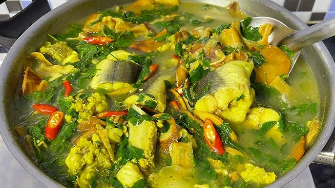
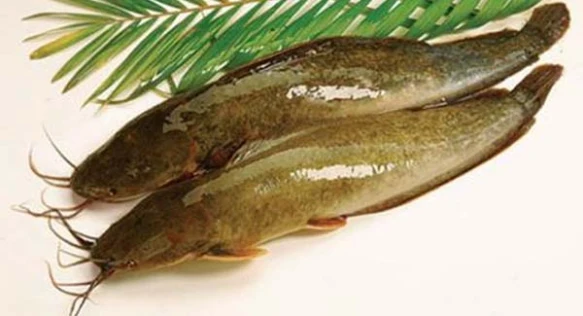
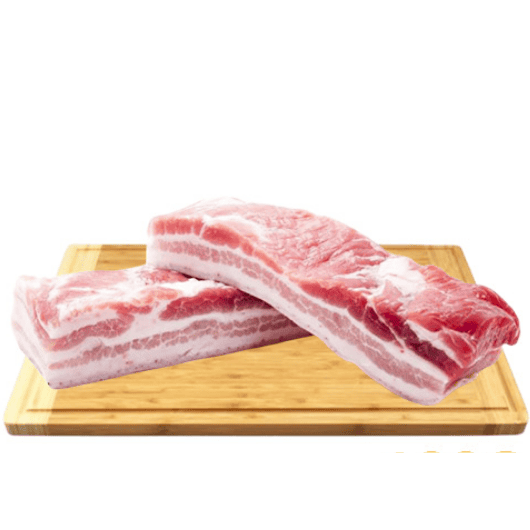
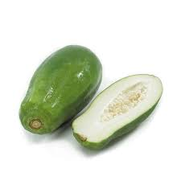
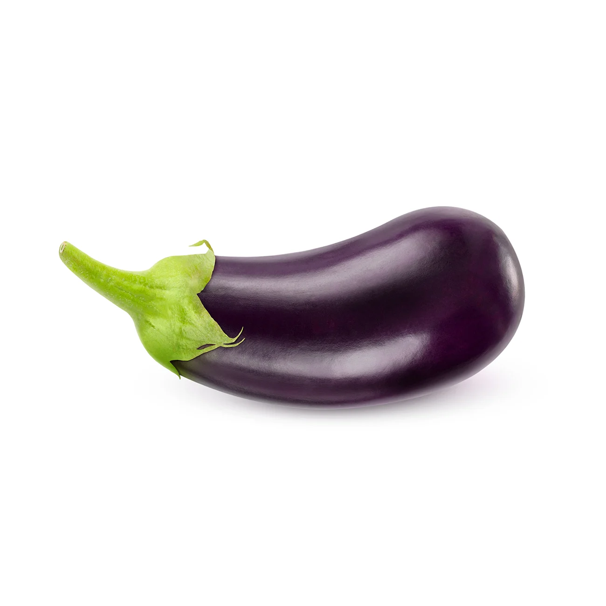
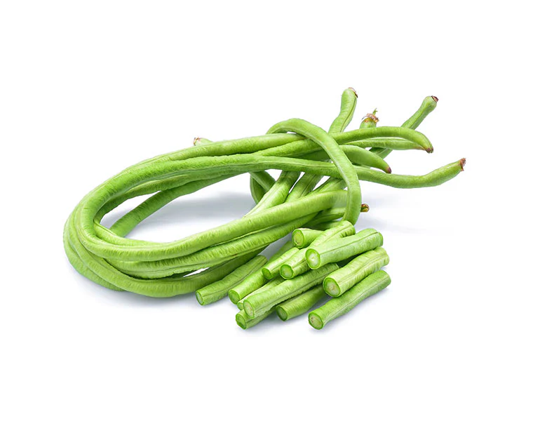
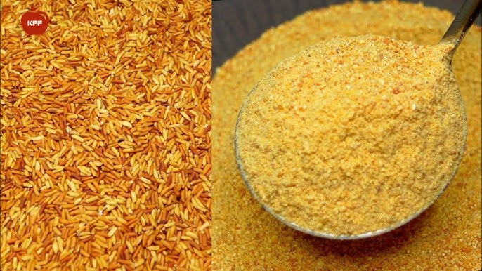

Somlor Korko
សម្លរកកូរ
Somlor Korko is a traditional Cambodian soup known for its rich and hearty flavor. It is made with a mix of fresh vegetables, herbs, and often fish or pork, cooked in a thick, savory broth with prahok. This dish is nutritious, aromatic, and represents the authentic taste of Khmer home cooking.
Calories
1500 kcal (400 kcal per serving)

Fish (Snakehead or Catfish)

1 whole fish (cut into pieces)
Buy NowPork Belly or Pork Ribs

200g
Buy NowKroeung (Spice Paste)

3 tbsp
Buy NowGreen Papaya

150g
Buy NowPumpkin

150g
Buy NowEggplant

100g
Buy NowLong Beans

100g
Buy NowRoasted Rice Powder

2 tbsp
Buy NowFermented Fish Paste (Prahok)

1–2 tbsp
Buy NowIvy Gourd Leaves (Slerk Bas) / Moringa Leaves

1 handful
Buy NowRecipe
-
Step 1: Prepare ingredients
- Pound kroeung (lemongrass, galangal, turmeric, garlic)
- Cut fish and pork into small pieces
- Wash and slice all vegetables
- Prepare roasted rice powder
-
Step 2: Fry kroeung
- Heat a pot with a little oil
- Add kroeung and prahok
- Stir until fragrant
-
Step 3: Cook the meat
- Add pork and fish into the pot
- Add fish sauce, sugar, and a little salt
- Stir until the meat is cooked
-
Step 4: Add hard vegetables
- Add green papaya, banana, and pumpkin
- Stir well to combine
-
Step 5: Add water and roasted rice
- Add water to cover the ingredients
- Add roasted rice powder
- Simmer until slightly thick
-
Step 6: Add remaining vegetables
- Add eggplant and long beans
- Cook until all vegetables are soft
-
Step 7: Finish and serve
- Add ivy gourd leaves or moringa leaves
- Taste and adjust seasoning
- Serve hot with rice